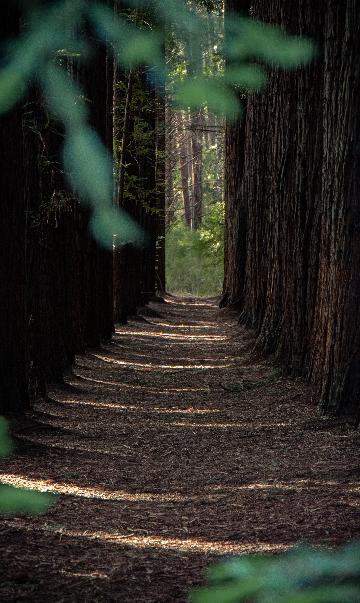

Our History
Founded in 1994 by a world renowed rock climber, Pacific Trails Resort has become the top destination for anyone looking to become on with nature. Since 1994 Pacific Trails Resort has grown from a small one man operation to a large scale team who ensure each guest enjoys their time and experiences to a world class standard. Please see a team member for more information.